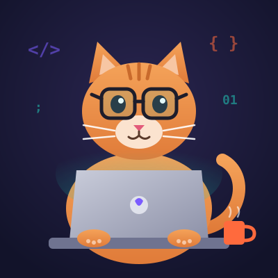

Bonjour, je suis
Jon Do
Étudiant ingénieur en informatique en alternance & développeur full-stack
Actuellement en 1re année du cycle ingénieur à l'École Supérieure du Numérique (2025–2028), en alternance chez NovaLog Systems, éditeur d'un logiciel de suivi logistique en SaaS.
Titulaire d'un BTS SIO option SLAM obtenu en 2025.
Centres d'intérêt
Ce qui me motive
Imaginer
Avant d'écrire la moindre ligne, je prends le temps de dessiner l'interface et le parcours utilisateur. Une maquette claire évite beaucoup d'allers-retours ensuite.
Construire
Je transforme ces maquettes en applications web et API. J'aime le code lisible, testé et versionné proprement avec Git.
Apprendre
Je fais de la veille chaque semaine : nouveaux frameworks, sécurité, bonnes pratiques. J'en partage le résumé sur ce portfolio.
Qui suis-je ?
À propos de moi
Je m'appelle Jon Do, j'ai 21 ans et je suis élève ingénieur en informatique à l'École Supérieure du Numérique. Mon alternance se déroule chez NovaLog Systems, où je participe au développement de TrackFlow, une plateforme de suivi de colis destinée aux transporteurs.
Mon domaine de prédilection est le développement back-end (API REST, C#/.NET, Node.js) et la conception de bases de données. Je m'intéresse de plus en plus à l'architecture logicielle et au déploiement continu.
En dehors de l'informatique, je joue de la guitare, je fais de la randonnée et je participe à un club de jeux de société.
Voir mes compétencesMon parcours
Chronologie
- 2025 – 2028
Cycle ingénieur informatique (alternance)
École Supérieure du Numérique — alternance chez NovaLog Systems.
- 2023 – 2025
BTS SIO option SLAM
Lycée Jules Exemple — stages chez Pixel & Co et à la Mairie de Villefictive.
- 2023
Baccalauréat général
Spécialités Mathématiques et NSI.
Ils en parlent
Témoignages
« Exemple de témoignage : Jon est rigoureux et toujours prêt à aider l'équipe. »
« Exemple de témoignage : un camarade de projet fiable, qui documente son code. »
« Exemple de témoignage : bonne autonomie pendant le stage et livrables rendus à temps. »
Contactez-moi
Pour me joindre
Une question, une proposition de projet ou d'alternance ? Écrivez-moi !
Par email : jon.do@example.com — ou via LinkedIn.
Mon CV est disponible ici.